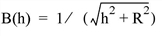
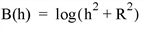
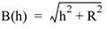
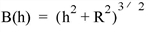
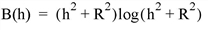
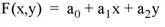
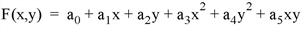
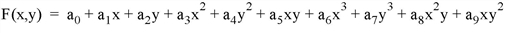
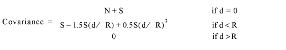

The GRIDDATA function interpolates scattered data values on a plane or a sphere to a regular grid, an irregular grid, a specified set of interpolates, or scattered data points. The returned value is a two-dimensional floating point array. Computations are performed in double-precision floating point. The following interpolation methods are supported:
|
Inverse Distance (default) |
Natural Neighbor |
|
Kriging |
Nearest Neighbor |
|
Linear |
Polynomial Regression |
|
Minimum Curvature |
Quintic |
|
Modified Shepard’s |
Radial Basis Function |
Note: GRIDDATA accepts complex input but only utilizes the real part of any complex number.
Result = GRIDDATA( X , F )
Result = GRIDDATA( X , Y , F )
Result = GRIDDATA( X , Y , Z , F , / SPHERE )
Result = GRIDDATA( Lon , Lat , F , / SPHERE )
Inverse Distance Keywords: [, METHOD =' InverseDistance ' | / INVERSE_DISTANCE ] [, ANISOTROPY = vector ] [, / DEGREES ] [, DELTA = vector ] [, DIMENSION = vector ] [, TRIANGLES = array [, EMPTY_SECTORS = value ] [, MAX_PER_SECTOR = value ] [, MIN_POINTS = value ] [, SEARCH_ELLIPSE = vector ] ] [, FAULT_POLYGONS = vector ] [, FAULT_XY = array ] [, / GRID , XOUT = vector , YOUT = vector ] [, MISSING = value ] [, POWER = value ] [, SECTORS ={1 | 2 | 3 | 4 | 5 | 6 | 7 | 8 } ] [, SMOOTHING = value ] [, / SPHERE ] [, START = vector ]
Kriging Keywords:
[
METHOD
='
Kriging
' | /
KRIGING
[,
ANISOTROPY
=
vector
] [,
DELTA
=
vector
] [,
DIMENSION
=
vector
] [,
TRIANGLES
=
array
[,
EMPTY_SECTORS
=
value
] [,
MAX_PER_SECTOR
=
value
] [,
MIN_POINTS
=
value
] [,
SEARCH_ELLIPSE
=
vector
] ] [,
FAULT_POLYGONS
=
vector
] [,
FAULT_XY
=
array
] [, /
GRID
,
XOUT
=
vector
,
YOUT
=
vector
] [,
MISSING
=
value
] [,
SECTORS
={1 | 2 | 3 | 4 | 5 | 6 | 7 | 8 } ] [, /
SPHERE
] [,
START
=
vector
] [,
VARIOGRAM
=
vector
]
Linear Interpolation Keywords: [ METHOD =' Linear ' | / LINEAR , TRIANGLES = array [, DELTA = vector ] [, DIMENSION = vector ] [, / GRID , XOUT = vector , YOUT = vector ] [, MISSING = value ] [, START = vector ]
Minimum Curvature Keywords: [ METHOD =' MinimumCurvature ' | / MIN_CURVATURE [, DELTA = vector ] [, DIMENSION = vector ] [, START = vector ]
Modified Shepard’s Keywords:
[
METHOD
='
ModifiedShepards
' | /
SHEPARDS
,
TRIANGLES
=
array
[,
ANISOTROPY
=
vector
] [,
DELTA
=
vector
] [,
DIMENSION
=
vector
] [,
EMPTY_SECTORS
=
value
] [,
FAULT_POLYGONS
=
vector
] [,
FAULT_XY
=
array
] [, /
GRID
,
XOUT
=
vector
,
YOUT
=
vector
] [,
MAX_PER_SECTOR
=
value
] [,
MIN_POINTS
=
value
] [,
MISSING
=
value
] [,
NEIGHBORHOOD
=
array
] [,
SEARCH_ELLIPSE
=
vector
] [,
SECTORS
={1 | 2 | 3 | 4 | 5 | 6 | 7 | 8 } ] [,
START
=
vector
]
Natural Neighbor Keywords: [ METHOD =' NaturalNeighbor ' | / NATURAL_NEIGHBOR , TRIANGLES = array [, / DEGREES ] [, DELTA = vector ] [, DIMENSION = vector ] [, / GRID , XOUT = vector , YOUT = vector ] [, MISSING = value ] [, / SPHERE ] [, START = vector ]
Nearest Neighbor Keywords: [ METHOD =' NearestNeighbor ' | / NEAREST_NEIGHBOR , TRIANGLES = array [, / DEGREES ] [, DELTA = vector ] [, DIMENSION = vector ] [, FAULT_POLYGONS = vector ] [, FAULT_XY = array ] [, / GRID , XOUT = vector , YOUT = vector ] [, MISSING = value ] [, / SPHERE ] [, START = vector ]
Polynomial Regression Keywords: METHOD =' PolynomialRegression ' | / POLYNOMIAL_REGRESSION , [, DELTA = vector ] [, DIMENSION = vector ] [, TRIANGLES = array [, EMPTY_SECTORS = value ] [, MAX_PER_SECTOR = value ] [, MIN_POINTS = value ] [, SEARCH_ELLIPSE = vector ] ] [, FAULT_POLYGONS = vector ] [, FAULT_XY = array ] [, / GRID , XOUT = vector , YOUT = vector ] [, MISSING = value ] [, POWER = value ] [, SECTORS ={1 | 2 | 3 | 4 | 5 | 6 | 7 | 8 } ] [, START = vector ]
Quintic Keywords: METHOD =' Quintic ' | / QUINTIC , TRIANGLES = array [, DELTA = vector ] [, DIMENSION = vector ] [, MISSING = value ] [, START = vector ]
Radial Basis Function Keywords: METHOD =' RadialBasisFunction ' | / RADIAL_BASIS_FUNCTION , [, ANISOTROPY = vector ] [, / DEGREES ] [, DELTA = vector ] [, DIMENSION = vector ] [, TRIANGLES = array [, EMPTY_SECTORS = value ] [, MAX_PER_SECTOR = value ] [, MIN_POINTS = value ] [, SEARCH_ELLIPSE = vector ] ] [, FAULT_POLYGONS = vector ] [, FAULT_XY = array ] [, FUNCTION_TYPE ={ 0 | 1 | 2 | 3 | 4 } ] [, / GRID , XOUT = vector , YOUT = vector ] [, MISSING = value ] [, SECTORS ={1 | 2 | 3 | 4 | 5 | 6 | 7 | 8 } ] [, SMOOTHING = value ] [, / SPHERE ] [, START = vector ]
If any of the input arguments are double precision, Result is double precision; otherwise, Result is single precision. All computations are performed in double precision.
The point locations. If only one input coordinate parameter is supplied, the points are interleaved; for the Cartesian coordinate system the points are 2-by- n dimensions; and 3-by- n for a sphere in Cartesian coordinates.
The function value at each location in the form of an n -element vector.
Note: GRIDDATA will use the minimum number of points specified in any of the X, Y, Z, or F array arguments as the number of input points and function values.
These arguments contain the locations (on a sphere) of the data points (similar to X , and Y ) but are in degrees or radians (default) depending on the use of the keyword DEGREES.
This keyword is a vector describing an ellipse (see the description for the SEARCH_ELLIPSE keyword). All points on the circumference of the ellipse have an equal influence on a point at the center of the ellipse.
For example, assume that atmospheric data are being interpolated, with one dimension being altitude, and the other dimension representing distance from a point. If the vertical mixing is half that of the horizontal mixing, a point 100 units from an interpolate and at the same level has the same influence as a point 50 units above or below the interpolate at the same horizontal location. This effect requires setting the ANISOTROPY keyword to [2, 1, 0] which forms an ellipse with an X -axis length twice as long as its Y -axis length.
By default, all angular inputs and keywords are assumed to be in radian units. Set the DEGREES keyword to change the angular input units to degrees.
A two-element array specifying the grid spacing in X and Y .
If this keyword is not specified, or if one of the elements is set equal to zero, the grid spacing is determined from the values of the DIMENSION and START keywords, according to the following rules:
DELTA 0 = (max( x ) - START 0 )/(DIMENSION 0 - 1)
DELTA 1 = (max( y ) - START 1 )/(DIMENSION 1 - 1)
DELTA can also be set to a scalar value to be used for the grid size in both X and Y .
This keyword is ignored if the GRID, XOUT and YOUT keywords are specified.
A two element array specifying the grid dimensions in X and Y . Default value is 25 for each dimension. This keyword can also be set to a scalar value to be used for the grid spacing in both X and Y .
This keyword is ignored if the GRID, XOUT and YOUT keywords are specified.
This keyword defines the search rules for the maximum number of sectors that may be empty when interpolating at each point. If this number or more sectors contain no data points, considering the search ellipse and/or the fault polygons, the resulting interpolant is the missing data value.
Note: The TRIANGLES keyword is required when the EMPTY_SECTORS, MAX_PER_SECTOR, MIN_POINTS, or SEARCH_ELLIPSE keywords are used.
Set this keyword to an array containing one or more polygon descriptions. A polygon description is an integer or longword array of the form: [ n , i 0 , i 1 , ..., i n –1 ], where n is the number of vertices that define the polygon, and i 0 ... i n –1 are indices into the FAULT_XY vertices. The FAULT_POLYGON array may contain multiple polygon descriptions that have been concatenated. To have this keyword ignore an entry in the FAULT_POLYGONS array, set the vertex count, n , and all associated indices to 0. To end the drawing list, even if additional array space is available, set n to –1. If this keyword is not specified, a single connected polygon is generated from FAULT_XY.
Note: FAULT_POLYGONS are not supported with spherical gridding.
The a 2-by- n array specifying the coordinates of points on the fault lines/polygons.
Note: FAULT_XY is not supported with spherical gridding.
Note: This keyword is only used with the Radial Basis Function method of interpolation.
Set this keyword to one of the values shown in the following table to indicate which basis function to use. Default is 0, the Inverse Multiquadric function.
|
Value |
Function Type Used |
Equation |
|
0 |
Inverse Multiquadric |
 |
|
1 |
Multilog |
 |
|
2 |
Multiquadric |
 |
|
3 |
Natural Cubic Spline |
 |
|
4 |
Thin Plate Spline |
 |
|
Note: In the equations, h = the anisotropically scaled distance from the interpolant to the node, and R 2 = the value of the SMOOTHING keyword. |
||
The GRID keyword controls how the XOUT and YOUT vectors specify where interpolates are desired.
If GRID is set, XOUT and YOUT must also be specified. Interpolation is performed on a regular or irregular grid specified by the vectors XOUT with m elements and YOUT with n elements. The Result is an m -by- n grid with point [ i , j ] resulting from the interpolation at (XOUT[ i ], YOUT[ j ]). When XOUT and YOUT are used, the DELTA, DIMENSION and START keywords are ignored.
Selects the Inverse Distance method of interpolation.
Selects the Kriging method of interpolation. The variogram type for the Kriging method is set by default, however the VARIOGRAM keyword can be used to set variogram parameters.
Selects the Linear method of interpolation. The TRIANGLES keyword is required when the LINEAR keyword is used.
This keyword defines the search rules for the maximum number of data points to include in each sector when interpolating. Search rules effectively limit the number of data points used in computing each interpolate. For example, to use the nearest n nodes to compute each interpolant, specify MAX_PER_SECTOR = n and use the TRIANGLES keyword.
Note: The TRIANGLES keyword is required when the EMPTY_SECTORS, MAX_PER_SECTOR, MIN_POINTS, or SEARCH_ELLIPSE keywords are used.
A string containing one of the method names as shown in the following table. The default for METHOD is “InverseDistance”.
Note: The interpolation method can be chosen using the METHOD keyword set to the specific string, or by setting the corresponding method name keyword.
Note: There are no spaces between words in the method strings and the strings are case insensitive.
|
Method String |
Meaning |
|
"InverseDistance" |
Data points closer to the grid points have more effect than those which are further away. |
|
"Kriging" |
Data points and their spatial variance are used to determine trends which are applied to the grid points. |
|
"Linear" |
Grid points are linearly interpolated from triangles formed by Delaunay triangulation. |
|
"MinimumCurvature" |
A plane of grid points is conformed to the data points while trying to minimize the amount of bending in the plane. |
|
"ModifiedShepards" |
Inverse Distance weighted with the least squares method. |
|
"NaturalNeighbor" |
Each interpolant is a linear combination of the three vertices of its enclosing Delaunay triangle and their adjacent vertices. |
|
"NearestNeighbor" |
The grid points have the same value as the nearest data point. |
|
"PolynomialRegression" |
Each interpolant is a least-squares fit of a polynomial in X and Y of the specified power to the specified data points. |
|
"Quintic" |
Grid points are interpolated with quintic polynomials from triangles formed by Delaunay triangulation. |
|
"RadialBasisFunction" |
The effects of data points are weighted by a function of their radial distance from a grid point. |
Selects the Minimum Curvature method of interpolation.
Note: If the Cholesky factorization used within the Minimum Curvature method fails, then a scalar 0 will be returned instead of the two-dimensional array.
Note: The minimum curvature algorithm requires a work array that is M 2 in size, where M is the total number of input data points. On 32-bit platforms, you are therefore limited to input data arrays that have less than approximately 46340 data points, with the exact number depending upon your available memory. Using an input array with too many elements will result in an error.
If fewer than this number of data points are encountered in all sectors, the value of the resulting grid point is set to the value of the MISSING keyword.
The MIN_POINTS keyword also indicates the number of closest points used for each local fit, if SEARCH_ELLIPSE isn’t specified.
Note: The TRIANGLES keyword is required when the EMPTY_SECTORS, MAX_PER_SECTOR, MIN_POINTS, or SEARCH_ELLIPSE keywords are used.
Set this keyword to the value that will be used for an element of the Result array if there is no calculated value for that element. The default is 0.
Selects the Natural Neighbor method of interpolation.
Note: The TRIANGLES keyword is required when the NATURAL_NEIGHBOR keyword is used.
Selects the Nearest Neighbor method of interpolation.
Note: The TRIANGLES keyword is required when the NEAREST_NEIGHBOR keyword is used.
Note: The NEIGHBORHOOD keyword is only used for the Modified Shepard’s method of interpolation.
A two-element array, [ Nq , Nw ] defining the quadratic fit, Nq , and weighting, Nw , neighborhood sizes for the Modified Shepard’s method. The default for Nq is the smaller of 13 and the number of points minus 1, with a minimum of 5. The default for Nw is the smaller of 19 and the number of points. The Modified Shepard’s method first computes the coefficients of a quadratic fit for each input point, using its Nq closest neighbors.
When interpolating an output point, the quadratic fits from the Nw closest input points are weighted inversely by a function of distance and then combined. The size of the neighborhood used for Shepard’s method interpolation may also be specified by the search rules keywords.
Selects the Polynomial Regression method for interpolation. The power of the polynomial regression is set to 2 by default, however the POWER keyword can be used to change the power to 1 or 3.
The function fit to each interpolant corresponding to the POWER keyword set equal to 1, 2 (the default), and 3 respectively is as follows:



By inspection, a minimum of three data points are required to fit the linear polynomial, six data points for the second polynomial equation (where POWER = 2), and ten data points for the third polynomial (POWER = 3). If not enough data points exist for a given interpolant, the missing data values are set to the value of the MISSING keyword.
The weighting power of the distance, or the maximum order in the polynomial fitting function. For polynomial regression, this value is either 1, 2 (the default), or 3.
Note: The POWER keyword is only used for the Inverse Distance and Polynomial Regression methods of interpolation.
Selects the triangulation with Quintic interpolation method.
Note: The TRIANGLES keyword is required when the QUINTIC keyword is used.
Selects the Radial Basis Function method of interpolation.
This keyword defines the search rules as a scalar or vector of from 1 to 3 elements that specify an ellipse or circle in the form [ R1 ], [ R1 , R2 ], or [ R1 , R2 , Theta ]. R1 is one radius, R2 the other radius, and Theta describes the angle between the X -axis to the R1 -axis, counterclockwise, in degrees or radians as specified by the DEGREES keyword. Only data points within this ellipse, centered on the location of the interpolate, are considered. If not specified, or 0, this distance test is not applied. Search rules effectively limit the number of data points used in computing each interpolate.
For example, to only consider data points within a distance of 5 units of each interpolant, specify the keyword as SEARCH_ELLIPSE = 5.
Note: The TRIANGLES keyword is required when the EMPTY_SECTORS, MAX_PER_SECTOR, MIN_POINTS, or SEARCH_ELLIPSE keywords are used.
This keyword defines the search rules for the number of sectors used in applying the MAX_SECTOR, EMPTY_SECTORS, and MIN_POINTS tests, an integer from 1 (the default setting) to 8.
Selects the Modified Shepard’s method of interpolation. The parameters for the Modified Shepard’s method are set by default, however the NEIGHBORHOOD keyword can be used to modify the parameters.
Note: The TRIANGLES keyword is required when the SHEPARDS keyword is used.
A scalar value defining the smoothing radius. For the Radial Basis Function method, if SMOOTHING is not specified, the default value is equal to the average point spacing, assuming a uniform distribution. For the Inverse Distance method, the default value is 0, implying no smoothing.
Note: The SMOOTHING keyword is used only for the Inverse Distance and Radial Basis Function methods of interpolation.
If set, data points lie on the surface of a sphere.
When the SPHERE keyword is used with Cartesian input coordinates (x,y,z), the coordinates must lie on a unit sphere (i.e., center at 0,0,0 and radius = 1). If any points do not lie on the sphere (within some tolerance), they are forced to be on the sphere, and GRIDDATA issues a warning and continues execution.
Furthermore, if a point lies at the origin, GRIDDATA throws an error that Cartesian coordinates cannot be zero, and halts execution.
A scalar or a two-element array specifying the start of the grid in X and Y . Default value is [min( x ), min( y )].
This keyword is ignored if the GRID, XOUT and YOUT keywords are specified.
A 3-by- nt longword array describing the connectivity of the input points, as returned by TRIANGULATE, where nt is the number of triangles. If duplicate point locations are input and the TRIANGLES keyword is present, only one of the points is considered.
Note: The TRIANGLES keyword is required for the Natural Neighbor, Nearest Neighbor, Modified Shepard’s, Linear, and Quintic Interpolation methods.
Note: The TRIANGLES keyword is required when the EMPTY_SECTORS, MAX_PER_SECTOR, MIN_POINTS, or SEARCH_ELLIPSE keywords are used.
Specifies the variogram type and parameters for the Kriging method. This parameter is a vector of one to four elements in the form of: [ Type , Range , Nugget , Scale ]. The Type is encoded as: 1 for linear, 2 for exponential, 3 for gaussian, 4 for spherical. Defaults values are: Type is exponential, Range is 8 times the average point spacing assuming a uniform distribution, Nugget is zero, and Scale is 1.
Note: The VARIOGRAM keyword is only used with the Kriging method of interpolation.
The following functions are used to model the variogram functions:
Linear Covariance:
Exponential Covariance:
Gaussian Covariance:
Spherical Covariance:

where d is the distance from one point to another, R is the range value, N is the nugget value, and S is the scale value.
If the GRID keyword is set, use XOUT to specify irregularly spaced rectangular output grids. If XOUT is specified, YOUT must also be specified. When XOUT and YOUT are used, the DELTA, DIMENSION and START keywords are ignored.
If GRID is not set (the default), the location vectors XOUT and YOUT directly contain the X and Y values of the interpolates, and must have the same number of elements. The Result has the same structure and number of elements as XOUT and YOUT, with point [ i ] resulting from the interpolation at (XOUT[ i ], YOUT[ i ]).
If the GRID keyword is set, use YOUT to specify irregularly spaced rectangular output grids. If YOUT is specified, XOUT must also be specified. When XOUT and YOUT are used, the DELTA, DIMENSION and START keywords are ignored.
If GRID is not set (the default), the location vectors XOUT and YOUT directly contain the X and Y values of the interpolates, and must have the same number of elements. The Result has the same structure and number of elements as XOUT and YOUT, with point [ i ] resulting from the interpolation at (XOUT[ i ], YOUT[ i ]).
Examples one through four below all use the same set of variables. Execute the code below before executing the examples:
; Create a dataset of N points.
n = 100 ;# of scattered points
seed = -121147L ;For consistency
x = RANDOMU(seed, n)
y = RANDOMU(seed, n)
; Create a dependent variable in the form a function of (x,y)
; with peaks & valleys.
f = 3 * EXP(-((9*x-2)^2 + (7-9*y)^2)/4) + $
3 * EXP(-((9*x+1)^2)/49 - (1-0.9*y)) + $
2 * EXP(-((9*x-7)^2 + (6-9*y)^2)/4) - $
EXP(-(9*x-4)^2 - (2-9*y)^2)
This example interpolates a data set measured on an irregular grid. Various types of the Inverse Distance interpolation method (the default method) are used in this example. ( Note : be sure you have created the Griddata Example Variables .)
; Initialize display.
WINDOW, 0, XSIZE = 512, YSIZE = 768, TITLE = 'Inverse Distance'
!P.MULTI = [0, 1, 3, 0, 0]
; Inverse distance: Simplest default case which produces a 25 x
; 25 grid.
grid = GRIDDATA(x, y, f)
SURFACE, grid, CHARSIZE = 3, TITLE = 'Simple Example'
; Default case, Inverse distance.
grid = GRIDDATA(x, y, f, START = 0, DELTA = 0.02, DIMENSION = 51)
SURFACE, grid, CHARSIZE = 3, TITLE = 'Larger Grid'
; Inverse distance + smoothing.
grid = GRIDDATA(x, y, f, START = 0, DELTA = 0.02, DIMENSION = 51, $
SMOOTH = 0.05)
SURFACE, grid, CHARSIZE = 3, TITLE = 'Smoothing'
; Set system variable back to default value.
!P.MULTI = 0
This example uses the same data as the previous one, however in this example we use the Radial Basis Function and the Modified Shepard’s interpolation methods.
; Initialize display.
WINDOW, 0, XSIZE = 512, YSIZE = 640, $
TITLE = 'Different Methods of Gridding'
!P.MULTI = [0, 1, 2, 0, 0]
; Use radial basis function with multilog basis function.
grid = GRIDDATA(x, y, f, START = 0, DELTA = 0.02, DIMENSION = 51, $
/RADIAL_BASIS_FUNCTION, FUNCTION_TYPE = 1)
SURFACE, grid, CHARSIZE = 3, TITLE = 'Radial Basis Function'
; The following example requires triangulation.
TRIANGULATE, x, y, tr
; Use Modified Shepard's method.
grid = GRIDDATA(x, y, f, START = 0, DELTA = 0.02, DIMENSION = 51, $
TRIANGLES = tr, /SHEPARDS)
SURFACE, grid, CHARSIZE = 3, TITLE = "Modified Shepard's Method"
; Set system variable back to default value.
!P.MULTI = 0
This example uses the same data as the previous ones, however in this example we use various types of the Polynomial Regression interpolation method.
; Initialize display.
WINDOW, 0, XSIZE = 512, YSIZE = 768, $
TITLE = 'Polynomial Regression'
!P.MULTI = [0, 1, 3, 0, 0]
; The following examples require the triangulation.
TRIANGULATE, x, y, tr
; Fit with a 2nd degree polynomial in x and y. This fit considers
; all points when fitting the surface, obliterating the individual
; peaks.
grid = GRIDDATA(x, y, f, START = 0, DELTA = 0.02, DIMENSION = 51, $
TRIANGLES = tr, /POLYNOMIAL_REGRESSION)
SURFACE, grid, CHARSIZE = 3, TITLE = 'Global Degree 2 Polynomial'
; Fit with a 2nd degree polynomial in x and y, but this time use
; only the 10 closest nodes to each interpolant. This provides a
; relatively smooth surface, but still shows the individual peaks.
grid = GRIDDATA(x, y, f, START = 0, DELTA = 0.02, DIMENSION = 51, $
TRIANGLES = tr, /POLYNOMIAL_REGRESSION, MAX_PER_SECTOR = 10)
SURFACE, grid, CHARSIZE = 3, TITLE = 'Local Polynomial, 10 Point'
; As above, but use only the nodes within a distance of 0.4 when
; fitting each interpolant.
grid = GRIDDATA(x, y, f, START = 0, DELTA = 0.02, DIMENSION = 51, $
TRIANGLES = tr, /POLYNOMIAL_REGRESSION, SEARCH_ELLIPSE = 0.4)
SURFACE, grid, CHARSIZE = 3, $
TITLE = 'Local Polynomial, Radius = 0.4'
!P.MULTI = 0 ; Set system variable back to default value.
This example uses the same data as the previous ones; however, in this example we show how to speed up the interpolation by limiting the interpolation to the local area around each interpolate.
Note:
The inverse distance, kriging, polynomial regression, and radial basis function methods are, by default, global methods in which each input node affects each output node. With these methods, large datasets can require a prohibitively long time to compute unless the scope of the interpolation is limited to a local area around each interpolate by specifying search rules. In fact, the radial basis function requires time proportional to the cube of the number of input points.
For example, with 2,000 input points, a typical workstation required 500 seconds to interpolate a 10,000 point grid using radial basis functions. By limiting the size of the fit to the 20 closest points to each interpolate, via the MIN_POINTS keyword, the time required dropped to less than a second.
; Initialize display.
WINDOW, 0, XSIZE = 512, YSIZE = 640, $
TITLE = 'Radial Basis Function'
!P.MULTI = [0, 1, 2, 0, 0]
; Slow way:
grid = GRIDDATA(x, y, f, START = 0, DELTA = 0.02, DIMENSION = 51, $
/RADIAL_BASIS_FUNCTION)
SURFACE, grid, CHARSIZE = 3, TITLE = 'All Points'
; The following example requires triangulation.
TRIANGULATE, x, y, tr
; Faster way:
grid = GRIDDATA(x, y, f, START = 0, DELTA = 0.02, DIMENSION = 51, $
/RADIAL_BASIS_FUNCTION, MIN_POINTS = 15, TRIANGLES = tr)
SURFACE, grid, CHARSIZE = 3, TITLE = 'Nearest 15 Points'
; Set system variable back to default value.
!P.MULTI = 0
This example interpolates a spherical data set measured on an irregular grid. We use the Kriging and Natural Neighbors interpolation methods in this example.
To begin, we will create a 100 scattered points on a sphere and form a function of their latitude and longitude. Then grid them to a 2 degree grid over the sphere, display a Mollweide projection map, and overlay the contours of the result on the map.
; Create a dataset of N points.
n = 100
; A 2 degree grid with grid dimensions.
delta = 2
dims = [360, 180]/delta
; Longitude and latitudes (for uniformly placed data)
lon = RANDOMU(seed, n) * 360 - 180
lat = ACOS(2*RANDOMU(seed, n) - 1.) * !RADEG - 90
; The lon/lat grid locations
lon_grid = FINDGEN(dims[0]) * delta - 180
lat_grid = FINDGEN(dims[1]) * delta - 90
; Create a dependent variable in the form of a smoothly varying
; function.
f = SIN(2*lon*!DTOR) + COS(lat*!DTOR) ;
Next, grid the data to a two-degree grid over the sphere, display a Mollweide projection map, and overlay the contours of the result on the map.
; Initialize display.
WINDOW, 0, XSIZE = 512, YSIZE = 768, TITLE = 'Spherical Gridding'
!P.MULTI = [0, 1, 3, 0, 0]
; Kriging: Simplest default case.
z = GRIDDATA(lon, lat, f, /KRIGING, /DEGREES, START = 0, /SPHERE, $
DELTA = delta, DIMENSION = dims)
MAP_SET, /MOLLWEIDE, /ISOTROPIC, /HORIZON, /GRID, CHARSIZE = 3, $
TITLE = 'Sphere: Kriging'
CONTOUR, z, lon_grid, lat_grid, /OVERPLOT, NLEVELS = 10, /FOLLOW
Next, we add a call to QHULL to triangulate the points on the sphere, and to then interpolate using the 10 closest points. The gridding portion of this example requires about one-fourth the time as above.
QHULL, lon, lat, tr, /DELAUNAY, SPHERE = s
z = GRIDDATA(lon, lat, f, /DEGREES, START = 0, DELTA = delta, $
DIMENSION = dims, TRIANGLES = tr, MIN_POINTS = 10, /KRIGING, $
/SPHERE)
MAP_SET, /MOLLWEIDE, /ISOTROPIC, /HORIZON, /GRID, /ADVANCE, $
CHARSIZE = 3, TITLE = 'Sphere: Kriging, 10 Closest Points'
CONTOUR, z, lon_grid, lat_grid, /OVERPLOT, NLEVELS = 10, /FOLLOW
WSHOW, 0
Finally, we use the natural neighbor method, which is about four times faster than the above example but does not give as smooth a surface:
z = GRIDDATA(lon, lat, f, /DEGREES, START = 0, DELTA = delta, $
DIMENSION = dims, /SPHERE, /NATURAL_NEIGHBOR, TRIANGLES = tr)
MAP_SET, /MOLLWEIDE, /ISOTROPIC, /HORIZON, /GRID, /ADVANCE, $
CHARSIZE = 3, TITLE = 'Sphere: Natural Neighbor'
CONTOUR, z, lon_grid, lat_grid, /OVERPLOT, NLEVELS = 10, /FOLLOW
WSHOW, 0
; Set system variable back to default value.
!P.MULTI = 0
The following example uses the data from the irreg_grid1.txt ASCII file. This file contains scattered elevation data of a model of an inlet. This scattered elevation data contains two duplicate locations.
The GRID_INPUT procedure is used to omit the duplicate locations for the GRIDDATA function. The GRIDDATA function is then used to grid the data using the Radial Basis Function method. This method is specified by setting the METHOD keyword the RadialBasisFunction string, although it could easily be done using the RADIAL_BASIS_FUNCTION keyword.
Note: Execute all of the following example sections in the order they are presented here.
First, we import the data:
file = FILEPATH('irreg_grid1.txt', $
SUBDIRECTORY = ['examples', 'data'])
; Import the data from the file into a structure.
dataStructure = READ_ASCII(file)
; Get the imported array from the first field of the structure.
dataArray = TRANSPOSE(dataStructure.field1)
; Initialize the variables of this example from
; the imported array.
x = dataArray[*, 0]
y = dataArray[*, 1]
data = dataArray[*, 2]
Next, we display the data by scaling it to range from 1 to 253 so a color table can be applied. The values of 0, 254, and 255 are reserved as outliers. We tell IDL to use decomposed color mode (a maximum of 256 colors) and load a color table, then plot the data and show the data values in color.
scaled = BYTSCL(data, TOP = !D.TABLE_SIZE - 4) + 1B
DEVICE, DECOMPOSED = 0
LOADCT, 38
; Open a display window and plot the data points.
WINDOW, 0
PLOT, x, y, /XSTYLE, /YSTYLE, LINESTYLE = 1, $
TITLE = 'Original Data, Scaled (1 to 253)', $
XTITLE = 'x', YTITLE = 'y'
; Now display the data values with respect to the color table.
FOR i = 0L, (N_ELEMENTS(x) - 1) DO PLOTS, x[i], y[i], PSYM = -1, $
SYMSIZE = 2., COLOR = scaled[i]
Next, we grid the data using the radial basis function method:
; Preprocess and sort the data. GRID_INPUT will
; remove any duplicate locations.
GRID_INPUT, x, y, data, xSorted, ySorted, dataSorted
; Initialize the grid parameters.
gridSize = [51, 51]
; Use the equation of a straight line and the grid parameters to
; determine the x of the resulting grid.
slope = (MAX(xSorted) - MIN(xSorted))/(gridSize[0] - 1)
intercept = MIN(xSorted)
xGrid = (slope*FINDGEN(gridSize[0])) + intercept
; Use the equation of a straight line and the grid parameters to
; determine the y of the resulting grid.
slope = (MAX(ySorted) - MIN(ySorted))/(gridSize[1] - 1)
intercept = MIN(ySorted)
yGrid = (slope*FINDGEN(gridSize[1])) + intercept
; Grid the data with the Radial Basis Function method.
grid = GRIDDATA(xSorted, ySorted, dataSorted, $
DIMENSION = gridSize, METHOD = 'RadialBasisFunction')
Finally, we open a second display window and contour the Radial Basis Function results:
WINDOW, 1
scaled = BYTSCL(grid, TOP = !D.TABLE_SIZE - 4) + 1B
CONTOUR, scaled, xGrid, YGrid, /XSTYLE, /YSTYLE, /FILL, $
LEVELS = BYTSCL(INDGEN(18), TOP = !D.TABLE_SIZE - 4) + 1B, $
C_COLORS = BYTSCL(INDGEN(18), TOP = !D.TABLE_SIZE - 4) + 1B, $
TITLE = 'The Resulting Grid with Radial Basis Function', $
XTITLE = 'x', YTITLE = 'y'
The following example uses the data from the irreg_grid1.txt ASCII file. This file contains scattered elevation data of a model of an inlet. This scattered elevation data contains two duplicate locations. The same data is used in the previous example.
The GRID_INPUT procedure is used to omit the duplicate locations for the GRIDDATA function. The GRIDDATA function is then used to grid the data using the Radial Basis Function method. This method is specified by setting the METHOD keyword the RadialBasisFunction string, although it could easily be done using the RADIAL_BASIS_FUNCTION keyword.
Faulting is also applied in this example. First, a fault area is placed around the right side of the dataset. This fault area contains data points. The data points within this area are gridded separately from the points outside of the fault area.
Then, a fault area is defined within an region that does not contain any data points. Since this fault area does not contain any points, the grid within this region simply results to the value defined by the MISSING keyword. The points outside of the fault area are gridded independent of the fault region.
Note: Execute all of the following example sections in the order they are presented here.
First, we import the data:
file = FILEPATH('irreg_grid1.txt', $
SUBDIRECTORY = ['examples', 'data'])
; Import the data from the file into a structure.
dataStructure = READ_ASCII(file)
; Get the imported array from the first field of the structure.
dataArray = TRANSPOSE(dataStructure.field1)
; Initialize the variables of this example from
; the imported array.
x = dataArray[*, 0]
y = dataArray[*, 1]
data = dataArray[*, 2]
Do some pre-processing before gridding the data. GRID_INPUT will remove any duplicate locations.
GRID_INPUT, x, y, data, xSorted, ySorted, dataSorted
; Initialize the grid parameters.
gridSize = [51, 51]
; Use the equation of a straight line and the grid parameters to
; determine the x of the resulting grid.
slope = (MAX(xSorted) - MIN(xSorted))/(gridSize[0] - 1)
intercept = MIN(xSorted)
xGrid = (slope*FINDGEN(gridSize[0])) + intercept
; Use the equation of a straight line and the grid parameters to
; determine the y of the resulting grid.
slope = (MAX(ySorted) - MIN(ySorted))/(gridSize[1] - 1)
intercept = MIN(ySorted)
yGrid = (slope*FINDGEN(gridSize[1])) + intercept
Grid the data with a fault area containing data points:
faultVertices0 = [[2200, 4000], [2200, 3000], [2600, 2700], $
[2600, -50], [5050, -50], [5050, 4000], [2200, 4000]]
faultConnectivity0 = [7, 0, 1, 2, 3, 4, 5, 6, -1]
; Grid the data with faulting using the Radial Basis Function
; method.
grid0 = GRIDDATA(xSorted, ySorted, dataSorted, $
DIMENSION = gridSize, METHOD = 'RadialBasisFunction', $
FAULT_XY = faultVertices0, $
FAULT_POLYGONS = faultConnectivity0, $
MISSING = MIN(dataSorted))
Grid the data again with a fault area that does not contain data points:
faultVertices1 = [[2600, -50], [2800, -50], [2800, 2700], $
[2400, 3000], [2400, 4000], [2200, 4000], [2200, 3000], $
[2600, 2700], [2600, -50]]
faultConnectivity1 = [9, 0, 1, 2, 3, 4, 5, 6, 7, 8, -1]
; Grid the data with faulting using the Radial Basis Function
; method.
grid1 = GRIDDATA(xSorted, ySorted, dataSorted, $
DIMENSION = gridSize, METHOD = 'RadialBasisFunction', $
FAULT_XY = faultVertices1, $
FAULT_POLYGONS = faultConnectivity1, $
MISSING = MIN(dataSorted))
Finally, we tell IDL to use decomposed color mode (a maximum of 256 colors) and load a color table, then display our gridded results:
DEVICE, DECOMPOSED = 0
LOADCT, 38
WINDOW, 0, XSIZE = 600, YSIZE = 600, $
TITLE = 'The Resulting Grid from the Radial Basis Function '+ $
'Method with Faulting'
!P.MULTI = [0, 1, 2, 0, 0]
; Display grid results.
CONTOUR, BYTSCL(grid0), xGrid, YGrid, /XSTYLE, /YSTYLE, /FILL, $
LEVELS = BYTSCL(INDGEN(18)), C_COLORS = BYTSCL(INDGEN(18)), $
TITLE = 'Fault Area Contains Data ' + $
'(Fault Area in Dashed Lines)', XTITLE = 'x', YTITLE = 'y'
; Display outline of fault area.
PLOTS, faultVertices0, /DATA, LINESTYLE = 2, THICK = 2
; Display grid results.
CONTOUR, BYTSCL(grid1), xGrid, YGrid, /XSTYLE, /YSTYLE, /FILL, $
LEVELS = BYTSCL(INDGEN(18)), C_COLORS = BYTSCL(INDGEN(18)), $
TITLE = 'Fault Area Does Not Contain Data '+ $
'(Fault Area in Dashed Lines)', XTITLE = 'x', YTITLE = 'y'
; Display outline of fault area.
PLOTS, faultVertices1, /DATA, LINESTYLE = 2, THICK = 2
; Set system variable back to default value.
!P.MULTI = 0
Isaaks, E. H., and Srivastava, R. M., An Introduction to Applied Geostatistics, Oxford University Press, New York, 1989.
Barrodale, I., et al, "Warping Digital Images Using Thin Plate Splines", Pattern Recognition, Vol 26, No 2, pp. 375-376., 1993.
Powell, M.J.D., “Tabulation of thin plate splines on a very fine two-dimensional grid”, Report No. DAMTP 1992/NA2, University of Cambridge, Cambridge, U.K. 1992.
Franke, R., and Nielson, G. , "Smooth Interpolation of Large Sets of Scattered Data", International Journal for Numerical Methods in Engineering, v. 15, 1980, pp. 1691-1704.
Renka, R. J., Algorithm 790 - CSHEP2D: Cubic Shepard Method for Bivariate Interpolation of Scattered Data, Robert J. Renka, ACM Trans. Math Softw. 25, 1 (March 1999), pp. 70-73.
Shepard, D., "A Two Dimensional Interpolation Function for Irregularly Spaced Data", Proc. 23rd Nat. Conf. ACM, 1968, pp. 517-523.
Watson, D. F., Contouring: A Guide to the Analysis and Display of Spatial Data, Pergamon Press, ISBN 0 08 040286 0, 1992.
Watson, D. F., Nngridr - An Implementation of Natural Neighbor Interpolation, David Watson, P.O. Box 734, Clarement, WA 6010, Australia, 1994.
Akima, H., Algorithm 761 - Scattered-data Surface Fitting that has the Accuracy of a Cubic Polynomial, Hiroshi Akima, ACM Trans. Math. Softw. 22, 3 (Sep. 1996), pp. 362 - 371.
Renka, R.J., "A Triangle-based C1 Interpolation Method", Rocky Mountain Journal of Mathematics, Vol 14, No. 1, 1984.
Franke, R., A Critical Comparison of Some Methods for Interpolation of Scattered Data, Naval Postgraduate School, Technical Report, NPS 53-79-003, 1979.
Hardy, R.L., "Theory and Applications of the Multiquadric-biharmonic Method", Computers Math. With Applic, v 19, no. 8/9, 1990, pp.163-208.
|
5.5 |
Introduced |